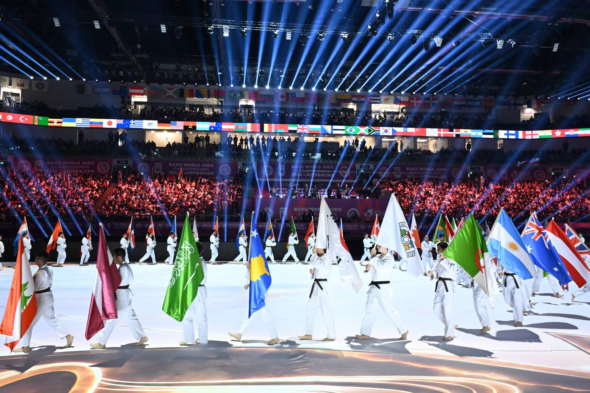

O Brasil chega à metade decisiva do Campeonato Mundial de Judô 2026 ainda em busca da primeira medalha no Azerbaijão. O melhor resultado brasileiro é o quinto lugar de Daniel Cargnin na categoria até 73 kg, conquistado nesta terça-feira, 6 de outubro. Clarice Ribeiro, de apenas 18 anos, também entrou entre as melhores do mundo com a sétima colocação nos 48 kg.
A situação, porém, mantém abertas algumas das principais possibilidades de pódio da delegação. Rafaela Silva luta nesta quarta-feira, enquanto Rafael Macedo, Guilherme Schimidt, Leonardo Gonçalves e a campeã olímpica Beatriz Souza ainda aparecem na programação dos próximos dias. No domingo, 11 de outubro, o Brasil fecha sua participação na competição por equipes mistas, formato no qual entra como cabeça de chave número um.
Realizado de 4 a 11 de outubro, o Mundial de Judô reúne mais de 600 atletas na National Gymnastics Arena, em Baku. São sete dias dedicados às 14 categorias individuais, seguidos pela competição por equipes mistas. Além dos títulos mundiais, o torneio tem peso direto na caminhada para os Jogos Olímpicos de Los Angeles 2028, distribuindo pontos importantes para o ranking classificatório.
Brasil levou força máxima para o Mundial
A Confederação Brasileira de Judô convocou 19 atletas para Baku. São 18 representantes nas disputas individuais, divididos igualmente entre nove homens e nove mulheres, além de Thauana Silva, chamada especificamente para reforçar a equipe mista.
A delegação mistura campeões e medalhistas olímpicos com uma nova geração que começa a ganhar espaço no circuito internacional. Rafaela Silva disputa seu 14º Campeonato Mundial, enquanto Beatriz Souza chega como uma das principais referências brasileiras entre os pesos pesados. Daniel Cargnin desembarcou em Baku depois de conquistar a prata mundial em 2025 e ocupando a segunda colocação do ranking de sua categoria.
O Brasil também chegou ao Azerbaijão depois de uma temporada consistente no Circuito Internacional. Antes do Mundial, a seleção havia conquistado 38 pódios em nove etapas de Grand Slam e Grand Prix em 2026, com nove ouros, sete pratas e 22 bronzes. É mais uma demonstração da força de uma modalidade que ocupa posição histórica no esporte brasileiro, tema abordado também na história do judô brasileiro e de sua tradição olímpica.
Daniel Cargnin fica a uma luta da medalha
O melhor desempenho brasileiro até agora veio com Daniel Cargnin nesta terça-feira. No peso até 73 kg, o brasileiro venceu três das cinco lutas disputadas e chegou à decisão do bronze.
Cargnin estreou contra Meylis Shamuradov, do Turcomenistão, e conseguiu um waza-ari nos segundos finais. Depois, derrotou o sueco Narek Vardanian com ippon e superou Giovanni Esposito, da Itália, nas quartas de final.
A caminhada parou na semifinal diante de Makhmadbek Makhmadbekov, dos Emirados Árabes Unidos, que conseguiu uma imobilização até o ippon. Na disputa pelo bronze, Cargnin enfrentou o azeri Rashid Mammadaliyev. O combate avançou para o golden score, até o brasileiro receber a terceira punição e terminar em quinto lugar.
Mesmo sem medalha, Cargnin manteve uma sequência expressiva. Desde que passou a competir nos 73 kg, chegou ao bloco final em quatro Mundiais consecutivos: bronze em 2022, quinto lugar em 2024, prata em 2025 e novamente quinto em 2026. O resultado em Baku ainda rendeu 720 pontos para o ranking mundial e 360 para a classificação olímpica de Los Angeles 2028.
Clarice Ribeiro consegue primeiro top 7 do Brasil
A jovem Clarice foi o primeiro destaque brasileiro do Mundial. Estreante na competição sênior aos 18 anos, ela venceu Anudari Jamsran, da Mongólia, e Gabriela Narvaez, do Paraguai, antes de encontrar a então campeã mundial Assunta Scutto, da Itália, nas quartas de final.
A derrota levou Clarice à repescagem, onde enfrentou a francesa Shirine Boukli, medalhista olímpica em Paris 2024. A brasileira ainda pontuou no fim do combate, mas não conseguiu reverter a vantagem da rival e encerrou sua primeira participação em um Mundial adulto em sétimo lugar.
Michel Augusto, por sua vez, venceu Christopher Velazco, dos Estados Unidos, antes de ser eliminado nas oitavas pelo cazaque Sherzod Davlatov, que posteriormente terminou com a medalha de prata dos 60 kg.
Na segunda-feira, o Brasil teve Ronald Lima nos 66 kg e Larissa Pimenta e Rafaela Rodrigues nos 52 kg.
Ronald venceu o canadense Julien Frascadore antes de cair nas oitavas diante do moldavo Denis Vieru, medalhista de bronze em Paris 2024. Rafaela Rodrigues abriu sua participação vencendo Minjeong Kim, da Coreia do Sul, mas foi eliminada pela italiana Odette Giuffrida após uma luta decidida pelas punições no golden score.
Larissa Pimenta encontrou logo na estreia a japonesa Uta Abe, campeã olímpica em Tóquio e multicampeã mundial. A japonesa venceu o confronto e posteriormente conquistou mais um título mundial da categoria.
Além de Cargnin, outros três brasileiros competiram nesta terça-feira. Guilherme de Oliveira venceu uma luta nos 73 kg antes de ser eliminado pelo italiano Leonardo Valeriani.
Sarah Souza teve uma campanha de duas vitórias nos 57 kg. Passou por Binta Ndiaye, da Suíça, e Maria Villalba, da Colômbia, mas caiu nas oitavas contra Eteri Liparteliani, da Geórgia, então número um do mundo e campeã mundial de 2025.
Jéssica Lima venceu Sosorbaram Lkhagvasuren, da Mongólia, e depois foi eliminada pela belga Mina Libeer. Após três dias, portanto, o Brasil segue sem medalhas, tendo Cargnin em quinto e Clarice Ribeiro em sétimo como seus melhores resultados.
A principal atração brasileira de quarta-feira
Amanhã, 7 de outubro, pode mudar o cenário brasileiro. Rafaela Silva disputa os 63 kg e chega a Baku como uma das atletas mais experientes de toda a delegação.
A brasileira estreia contra a vencedora de Catherine Beauchemin-Pinard, do Canadá, e Yoana Manova, da Bulgária. A chave também inclui a francesa Clarisse Agbegnenou, uma das maiores referências internacionais da categoria.
No masculino, David Lima representa o Brasil nos 81 kg. O estreante em Campeonatos Mundiais aguarda o vencedor do confronto entre Nugzari Tatalashvili, dos Emirados Árabes Unidos, e Vasilije Grujicic, da Sérvia.
Quem ainda luta pelo Brasil no Mundial:
- Quarta-feira, 7 de outubro
- 63 kg feminino — Rafaela Silva
- 81 kg masculino — David Lima
- Preliminares: 3h30
- Finais e disputas de bronze: 11h
- Quinta-feira, 8 de outubro
- 70 kg feminino — Nauana Silva
- 90 kg masculino — Guilherme Schimidt e Rafael Macedo
- Preliminares: 3h30
- Finais e disputas de bronze: 11h
- Sexta-feira, 9 de outubro
- 78 kg feminino — Beatriz Freitas
- 100 kg masculino — Giovani Ferreira e Leonardo Gonçalves
- Preliminares: 3h30
- Finais e disputas de bronze: 11h
- Sábado, 10 de outubro
- +78 kg feminino — Beatriz Souza
- Preliminares: 4h30
- Finais e disputas de bronze: 11h
- Domingo, 11 de outubro
- Equipes mistas
- Preliminares: 2h30
- Finais e disputas de bronze: 11h
Todos os horários são fuso de Brasília.
Duelo de campeãs olímpicas
Um dos confrontos mais aguardados pelo Brasil acontecerá no sábado. Campeã olímpica dos pesos pesados em Paris 2024, Beatriz Souza fará sua estreia no Mundial contra Akira Sone, do Japão, também campeã olímpica. O sorteio colocou, portanto, duas das principais atletas da categoria frente a frente logo no início da campanha brasileira.
Antes disso, a quinta-feira terá duas lutas brasileiras nos 90 kg, com Rafael Macedo e Guilherme Schimidt. Os dois foram colocados no mesmo lado da chave e podem se enfrentar nas quartas de final caso avancem. Na sexta, Leonardo Gonçalves e Giovani Ferreira dobram as chances do país nos 100 kg.
Brasil é cabeça de chave número um nas equipes mistas
Mesmo que a campanha individual não entregue o resultado esperado, o Brasil ainda terá uma oportunidade importante no domingo.
A seleção entra como cabeça de chave número um na competição de equipes mistas e enfrenta a China nas oitavas de final. Em caso de classificação, o adversário nas quartas sairá de Cuba x Turquia. O país busca sua quarta medalha nesse formato de Mundial.
A disputa por equipes também ganha importância pelo histórico brasileiro: antes da edição de 2026, o país contabilizava 11 medalhas mundiais por equipes, além de 57 pódios individuais. Somando os dois formatos, eram 68 medalhas na história da competição.
Japão domina o início do Mundial
Enquanto o Brasil procura abrir sua contagem de medalhas, o Japão assumiu protagonismo absoluto nos primeiros dias em Baku.
Wakana Koga venceu os 48 kg, Uta Abe conquistou os 52 kg e Hifumi Abe levou o título dos 66 kg. Nesta terça-feira, a potência asiática ampliou a sequência com Ryuga Tanaka nos 73 kg e Akari Omori nos 57 kg, chegando a cinco medalhas de ouro após três dias de competição.
O Azerbaijão também comemorou um título diante de sua torcida com Ahmad Yusifov nos 60 kg, além do bronze de Rashid Mammadaliyev nos 73 kg, justamente o adversário que impediu Daniel Cargnin de subir ao pódio.
Onde assistir ao Mundial de Judô 2026
A programação brasileira tem transmissão durante todos os dias de competição. As preliminares podem ser acompanhadas gratuitamente pela Time Brasil TV no YouTube. O bloco decisivo, com disputas de bronze e finais, também tem transmissão do SporTV e Time Brasil TV.
Com Rafaela Silva abrindo a sequência dos grandes nomes que ainda não estrearam, o Mundial entra agora em um trecho decisivo para o Brasil. Rafael Macedo, Guilherme Schimidt, Leonardo Gonçalves e, principalmente, Beatriz Souza mantêm o país com possibilidades concretas de chegar ao pódio antes da disputa por equipes.
Depois de Daniel Cargnin ficar a uma vitória do bronze, a missão brasileira em Baku passa a ser transformar a força demonstrada durante toda a temporada em medalhas justamente na competição que mais pesa no calendário internacional de 2026.